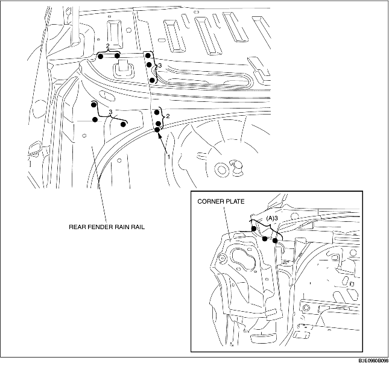
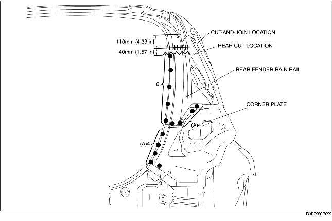

REAR FENDER RAIN RAIL AND CORNER PLATE REMOVAL
B3E098070440B01
4SD
1. Remove the rear fender rain rail and corner plate.
-
Note
-
• When removing the rear fender rain rail and the corner plate separately, drill the 3 locations indicated by (A).

5HB
1. Remove the rear fender rain rail and corner plate.
-
Note
-
• When removing the rear fender rain rail and the corner plate separately, drill the 8 locations indicated by (A).
